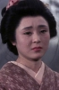

Also known as:座頭市千両首 (original title)
Country:Japan, 83 minutes
Spoken languages:Japanese
Genres:Action, Drama
Director(s):Kazuo Ikehiro
Writer(s):Akikazu Ota, Shozaburo Asai
Video Codec:Unknown
Number: 2823


Certification:
Storyline:
Ichi travels to the village of Itakura to pay his respects at the grave of Kichizo, a man he killed two years ago. When some tax money is stolen while in transit to the governor he is accused and sets out to find the money and clear his name.
Cast: 


Medium: Bluray,
Comments: Part of: Zatoichi - The Blind Swordsman collection
Loaned: No
Aspect ratio: Unknown